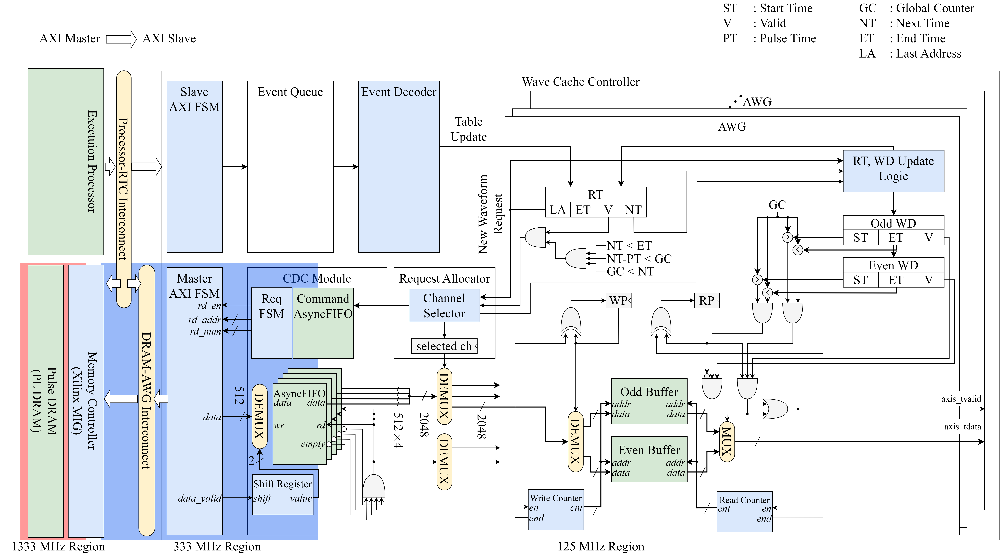
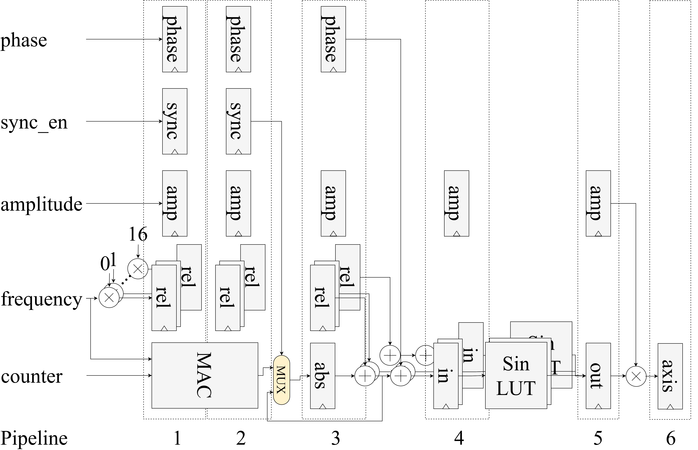
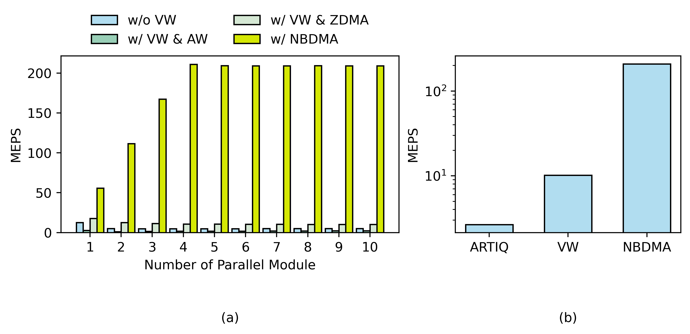

RFSoC-based TIQC Control System

True-arb waveform generation capable fully integrated TIQC control SoC. It contains three processors: a Network Processor, an Monitor Processor, and an Execution Processor. All processors run in bare-metal mode to eliminate the unpredictable behavior of an operating system. The Network Processor handles commands from the host server, running a TCP server implemented with raw lwIP. It interrupts the Execution Processor to load binary code (ELF file) transmitted from the host or to forcibly halt the program in execution. The Monitor Processor continuously monitors all modules in real time, records error signals, and can override signals for each module.
Real-time Controller IP

In our system, all IPs are connected via AXI. Each IP receives microcode, pushes it into a queue, and, when the timestamp specified in the microcode is reached, pops the queue and executes the microcode. These specific microcode is defined as a event, and IP is designated as a real-time controller (RTC). In other words, every IP is encapsulated by an RTC that follows the register map above.
DRAM based Arbitrary Waveform Generator IP
Typical AWG devices for quantum computer lack sufficient memory capacity to generate true-arbitrary waveforms for TIQC because they rely solely on on-chip BRAM. Our new AWG IP on an RFSoC overcomes this limitation by using external DDR SDRAM. To eliminate the unpredictable latency introduced by periodic DRAM refresh, we employ double-buffering, with a microarchitecture that schedules waveform reads and controls the output in real time.

It is well known that DRAM is composed of several banks, each of which is made up of rows. Once a row has been activated, subsequent accesses to that row proceed without an additional ACT command, which is known as a row hit. When a different row must be activated, the access incurs a row miss. To avoid row misses when reading a waveform buffer from DRAM, the waveform data is aligned to the memory-row size, and the data transfers are evenly scheduled.

The optimal buffer size and its corresponding latency for the AWG IP are calculated analytically, and the results are compared with the latency measured experimentally. A worst-case execution-time latency of 900 ns was observed with one channel, whereas 2.16 µs was recorded with eight channels.
Direct Digital Synthesis IP
Because some experiments require sustained waveform generation at a fixed frequency, we implemented a DDS IP core as well. To generate sinusoidal signals with user-set phase, amplitude, and frequency, the parameters pass through a phase accumulator, a sine-lookup table, and an amplitude multiplier. To meet timing constraints, the design is implemented as a five-stage pipeline.

Additionally, certain quantum experiments require real-time phase re-alignment, necessitating a real-time phase-offset calculation that involves a 48-bit multiplication. To meet timing constraints, the operation is implemented using a Vedic multiplication algorithm.
Interrupt based Flow Control

Events can be loaded by the processor or via the DMA engine. The two cases must be handled differently to prevent stalls caused by queue saturation. The figure above illustrates processor-based event loading.
To prevent queue saturation during processor-initiated event loading, the RTC triggers an interrupt to the processor when its queue is almost full, and the processor logs the request in an internal table. When a new event must be loaded into the RTC that issued the interrupt, the processor writes the event to memory in linked-list form rather than directly to the RTC. Later, when the RTC raises another interrupt indicating that its queue is nearly empty, the processor reads the pending events from memory and transfers them to the RTC via ZDMA, which is the Zynq DMA engine embedded in the PS. Note that events stored in memory are divided into blocks, and only one block is transferred from memory to the RTC at a time, so the queue does not become saturated.
Non-blocking Direct Memory Access (DMA Flow Control)

When a large number of events must be loaded (e.g., ion shuttling in TIQC), it is necessary to utilize DMA (e.g. shuttling in TIQC). However, triggering an interrupt to the processor introduces substantial overhead and significantly reduces throughput.

However, when flow control is not applied to the DMA engine, it can cause a stall in the system, as shown in the figure above.
To overcome this limitation while maintaining high throughput, we implemented a non-blocking DMA approach in which a dedicated RTC senses the queue status and initiates DMA transfers one block at a time.

To optimize the queue size, we performed a Monte Carlo simulation. Moreover, to accelerate the simulation through parallelization, we implemented it in CUDA on an RTX 2070 GPU. The figure above shows that a queue depth of 2048 is optimal for our case.
The figure above compares the million events per second (MEPS) achieved by the processor-based and DMA-based event-loading methods. The DMA-based approach reaches 200 MEPS, which is equivalent to 3.2 GB/s (each event occupies 16 MB). It is ten times higher than the throughput of the processor-based method.
Host Server

The user selects a C++ source file via the IQUIP GUI and schedules it to compile on the master server. The master server then finds the highest-priority job and compiles the C++ code with the GNU compiler. A linker script, written for the Execution Processor, links all user C++ object files and BSP object files. Finally, the master server sends the resulting ELF file to the Execution Processor via TCP.
Automatic Vivado Project Generation


A Python script generates TCL code and executes it in Vivado to create a custom IP core (the RTC in our case), connect it in the block diagram, and automatically assign AXI addresses based on a JSON metadata file. The block diagram shown above was generated by Vivado Project Manager and includes nearly 45 custom IP cores.
Ion Trap Two Qubit Gate Pulse Shaping Optimization

Pulse shaping optimization through ADAM algorithm and analysis between experiment data and calculated data.